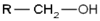
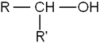

Classificações
Álcoois primários
Os álcoois primários têm o grupo hidroxila ou oxidrila ligado a um carbono primário, como por exemplo o etanol. Sua fórmula geral é:
 (Na figura, "R" representa um radical hidrocarboneto qualquer).
Álcoois secundários
A fórmula geral dos álcoois secundários é:
,
onde "R" representa um radical hidrocarboneto qualquer.
Os álcoois secundários têm o grupo hidroxila ligado a um carbono secundário (isto é, um átomo de carbono que está ligado a apenas dois outros átomos de carbono), como é o caso do 2-propanol:

Álcoois terciários
Os álcoois terciários têm o grupo hidroxila ligado a um carbono terciário. Como o 2-metil-2-propanol e o trimetilcarbinol. A fórmula geral é representada com "R", representa um radical hidrocarboneto qualquer)2=composição.